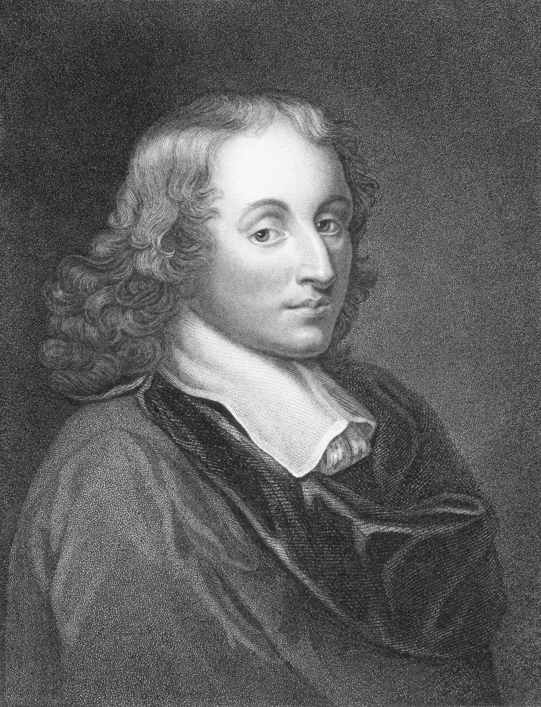

Najwybitniejsi naukowcy, których prace przyczyniły się do powstania komputerów:
- Christopher Latham Sholes (maszyna do pisania, 1867)
- Blaise Pascal (kalkulator od nazwiska konstruktora zwany Pascaliną, 1642)
- Gottfried Leibniz (system binarny, żywa ława do obliczeń, mechanizm stepped drum)
- Abraham Stern (maszyna licząca)
- Alan Turing (teoretyczne podstawy informatyki, maszyna Turinga i uniwersalna maszyna Turinga)
- Claude Shannon (teoretyczne podstawy budowy komputerów – „przekucie” algebr Boole’a i współczesnej mu wiedzy o elektronice
Poniżej przedstawię notki biograficzne wybranych pionierów informatyki:

Alan Mathison Turing (ur. 23 czerwca 1912 w Londynie, zm. 7 czerwca 1954 w Wilmslow[1] k. Manchesteru) – brytyjski matematyk, informatyk i wojskowy. Zajmował się głównie matematyką stosowaną: probabilistyką, teorią obliczalności, kryptologią i biomatematyką.
Turing to jeden z pionierów informatyki jako twórca koncepcji maszyny Turinga[2][3]. W czasie II wojny światowej pracował nad złamaniem szyfrów III Rzeszy, konkretniej maszyny Enigma. Był także jednym z ojców sztucznej inteligencji, proponując test Turinga jako kryterium inteligencji; wywarł tym wpływ na filozofię umysłu.
Turinga upamiętniają między innymi pomniki, nazwa planetoidy, nagroda naukowa, film Gra tajemnic i brytyjski banknot pięćdziesięciofuntowy (£50).

Blaise Pascal, wym. [blɛz pas'kal], pol. Błażej Pascal (ur. 19 czerwca 1623 w Clermont-Ferrand, zm. 19 sierpnia 1662 w Paryżu)[1] – francuski intelektualista: matematyk, fizyk, inżynier-wynalazca, filozof, teolog i literat.
Początkowo był przede wszystkim matematykiem, współtworzącym dwie nowe dyscypliny: geometrię rzutową i probabilistykę. Pionierskie prace Pascala, Fermata i Huygensa w tej drugiej dziedzinie wywarły niemały wpływ na rozwój nowożytnej ekonomii i innych nauk społecznych. Znany jest m.in. dzięki nazwie twierdzenia Pascala w geometrii płaskiej oraz trójkąta Pascala – francuski uczony opisał ten diagram prawdopodobnie jako pierwszy w Europie, niezależnie od matematyków chińskich i perskich poprzedzających go o stulecia.